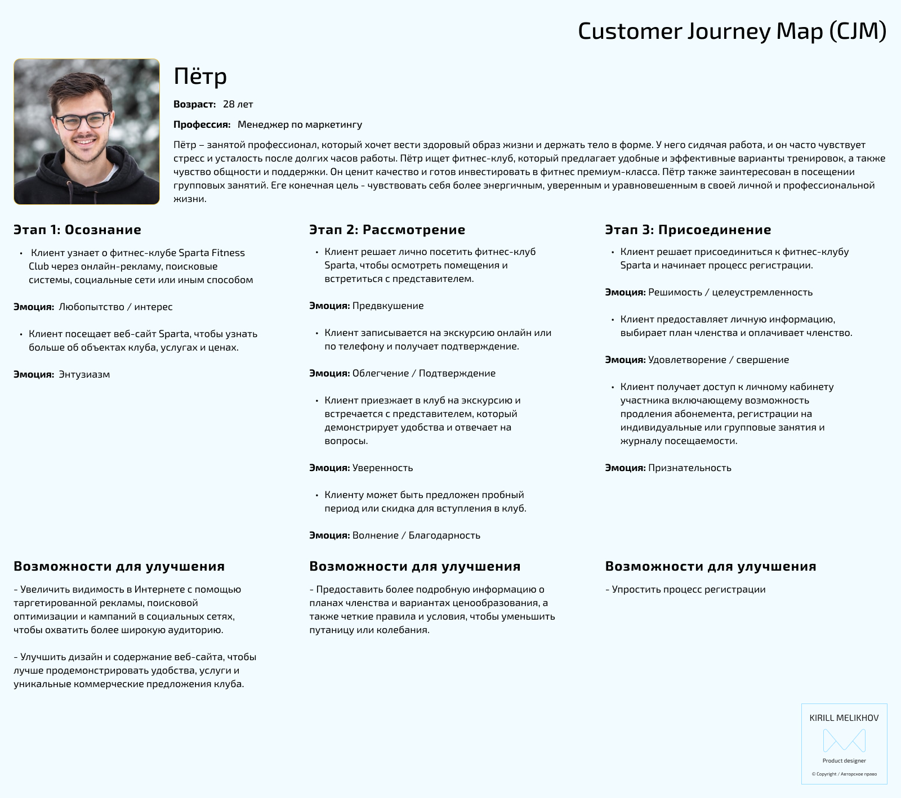
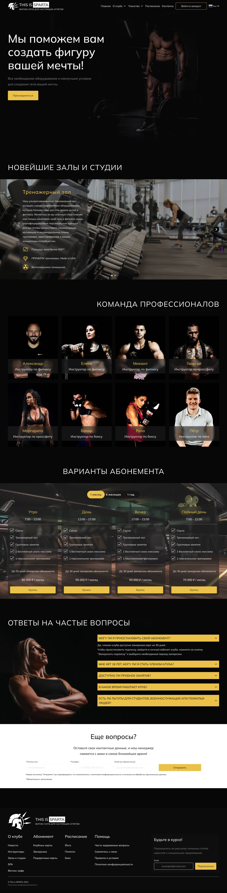

Case Study
UX Research
The project included a comprehensive UX study that incorporated various methods, such as conducting user interviews, performing a competitive audit, and creating a Customer Journey Map.
During the user interviews, valuable insights were gathered regarding the challenges faced by users of similar websites. Some of the key issues identified include:
- Difficulty in finding information about the club's services, equipment, and subscription costs;
- Limited or outdated class schedules that fail to reflect real-time availability;
- Complex login or participant registration processes that require users to input excessive amounts of information;
- User frustration and errors resulting from a poorly designed online booking system.
Additionally, a thorough analysis of competitor websites uncovered several noteworthy aspects, including strengths, weaknesses, and untapped opportunities.
Advantages:
- An easy-to-use online booking system for class scheduling;
- An interactive calendar that displays real-time class schedules and seat availability;
- User-friendly navigation and well-organized website structure;
- Informative blogs and articles offering fitness and nutrition tips;
- Other advantages.
Disadvantages:
- Limited or hard-to-find information about certain services;
- Inconsistent or outdated class schedules and availability of open spots;
- Confusing or unintuitive user interface;
- Low-quality visual content, including images;
- Other disadvantages;
Unrealized opportunities:
- Limited options for virtual or remote classes;
- Insufficient resources for beginner athletes;
- Lack of resources tailored to the elderly or individuals with special needs;
- Inadequate accessibility options for people with disabilities;
- Other unrealized opportunities.
Using the Customer Journey Map (CJM) was crucial in ensuring that the final design successfully meets the needs and expectations of the target audience. By creating a comprehensive CJM, I was able to visually map out the entire client journey, starting from the initial awareness stage all the way to their decision to join the club. This allowed me to identify and analyze the pain points and potential areas for improvement throughout the entire process.

This enabled me to create a website that puts the user at the center and prioritize features and content that enhance the overall user experience, ultimately motivating visitors to take action. In today's digital landscape, the utilization of CJM has emerged as a crucial tool in achieving project goals and designing a successful website.
By leveraging the insights provided by the Customer Journey Map (CJM), I gained a deeper understanding of the user's needs, pain points, and motivations throughout their journey on the website. This holistic view allowed me to identify key touchpoints and optimize them to align with the user's expectations, thereby improving their overall satisfaction and engagement.
Final Design
The site has been designed with a strict, minimalistic, and modern aesthetic, complemented by a clear information architecture. The landing page features several key sections, including a captivating hero section, an informative segment detailing the equipment available in the club's halls and studios, subscription options, a comprehensive list of instructors, and a dedicated section addressing frequently asked questions.
The design of the site embraces simplicity and elegance, providing a visually pleasing experience for users. With its clean lines and streamlined interface, it allows visitors to easily navigate and access the information they need. The hero section serves as a focal point, captivating the attention of users and enticing them to explore further.
To ensure transparency and facilitate decision-making, the site dedicates a section to highlight the various equipment available within the club's halls and studios. This enables potential members to understand the amenities and offerings they can expect, fostering trust and aiding in their decision-making process.

Subscription options are prominently displayed on the landing page, making it convenient for users to explore different membership plans and select the one that best suits their needs. By presenting this information upfront, the site promotes an efficient user experience and helps visitors quickly determine the right membership option for them.
In addition, the landing page features a comprehensive list of instructors, showcasing their expertise and credentials. This enables users to familiarize themselves with the instructors' backgrounds and specialties, enhancing their confidence in the club's offerings.
Lastly, the inclusion of a well-structured section addressing frequently asked questions demonstrates a commitment to customer service. By addressing common queries and concerns, the site empowers visitors with the information they need to make informed decisions, reducing any potential barriers to engagement.

The "About the Club" section consists of subsections that contain dedicated pages featuring services, offers, and other valuable information.
Within the "About the Club" section, you will find carefully curated subsections that provide in-depth details about various aspects of the club. These subsections include pages that specifically focus on highlighting the club's services, showcasing the range of offerings available to members. From fitness programs to specialized training sessions, these pages offer comprehensive information about the club's diverse services.

The personal account provided to club members grants them exclusive access to a comprehensive set of management features. Within their personal account, members can effortlessly track their training records, closely monitor their visits to the fitness room, conveniently renew their subscriptions, and even utilize an advanced Electronic Digital Signature (EDS) to sign essential documents. This all-in-one platform serves as a centralized hub for members to effectively manage their fitness-related activities and administrative tasks, ensuring a seamless and convenient experience throughout their membership journey.